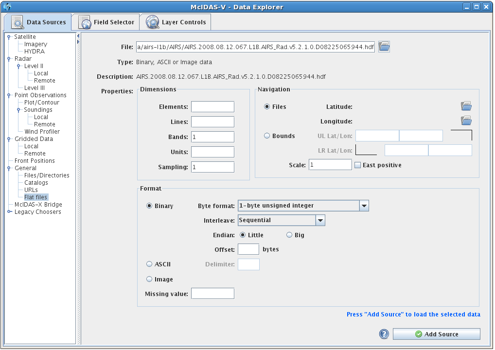

Choosing Flat File Data
The General->Flat files chooser allows generic flat (2-dimensional) data to be loaded. The user must supply information about the format of the data by either specifying it directly or by loading a properly formatted header file. Flat files can be binary, ASCII values, or standard images (JPEG, GIF, etc.), and may contain multiple bands. Navigation may be loaded via separate navigation files or by specifying a bounding box for the data.

Image 1: Flat File Chooser
Properties
- Files - Enter in a file location or use the
 button to browse your local disk.
button to browse your local disk.
- Type - McIDAS-V will attempt to determine the type of file you are loading. If it is an unknown format, Binary, ASCII or Image data will be displayed.
- Description - If available, a description of the data will be displayed. If no description can be found, the file name is displayed.
- Properties->Dimensions:
- Elements - The number of elements (columns) in the data.
- Lines - The number of lines (rows) in the data.
- Bands - The number of bands (layers) in the data.
- Units - The unit type of the data.
- Sampling - The number of points to skip in each dimension
when loading the data. Useful with very large data files.
- Properties->Navigation:
- Files - Navigation files containing grids of Latitude/Longitude points can by specified by clicking on the buttons.
- Bounds - A navigation bounding box can be specified by entering Upper Left (UL) and Lower Right (LR) Latitude/Longitude pairs.
- Scale - The scaling factor if the Latitude/Longitude navigation dimensions are different than the data.
- East positive - Checkbox to indicate that the data is East Positive
- Properties->Format:
- Binary - When loading binary files the Byte format, Interleave, and Endian-ness must accurately describe the data. A byte Offset into the data can also be given.
- ASCII - When loading ASCII files the Delimiter character must be given.
- Image - When loading a raw Image this option must be selected.
- Missing value:
If there is a value for missing data, enter it here.
 Help - Brings up this help page.
Help - Brings up this help page. - Loads the selected data.
- Loads the selected data.